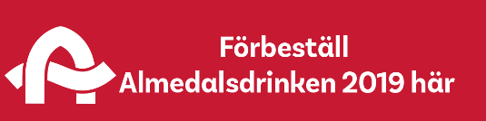

Fräschast i Almedalen sedan 2012
I många sammanhang har alkoholen fortfarande en självskriven roll. Detta exkluderar de som inte vill, kan eller får dricka alkohol. Almedalsdrinken finns för att säkerställa ett gott utbud av alkoholfritt på uteställen och mingel.
Vi ser att antalet alkoholfria almedalsarrangemang ökar och är stolta över att Almedalsdrinken har bidragit till detta. Mineralvatten är inte längre den enda alkoholfria drycken som serveras och Almedalsdrinken är det perfekta exemplet på en lyxigt svalkande drink som dessutom gör att du har skärpan i behåll.
Politik skapas genom alla de möten och samtal som sker under Almedalsveckan – den har länge varit bilden av den inkluderande demokratiska processen. Men när alkohol kommer in i bilden exkluderas människor. Gott värdskap och ett demokratiskt samtal som inkluderar alla blir verklighet när alla kan välja vad de vill dricka. Känn er fria att sälja eller bjuda på drinken när ni arrangerar mingel. Almedalsdrinken är till för alla!
Hjälp till att sprida Almedalsdrinken genom att twittra med #almedalsdrinken eller dela sidan på Facebook. Tipsa barpersonal, mingelfixare och kollegor om den och passa på att testa på plats. Även i år finns ett mobilt drinkteam som kan bokas till mingel eller andra arrangemang i Almedalen.
